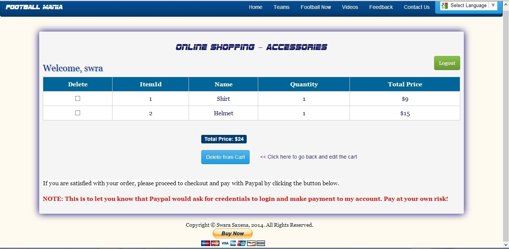

The View Cart page allows user to view his/her cart items with total price for each item and sum total calculated dynamically and displayed on the page.
User has the option of deleting multiple items from his/her cart by selecting the checkboxes against each item
and clicking "Delete from Cart" button. A confirmation popup would be displayed asking the user to confirm deletion.
If confirmed, the item would be deleted from the Cart table and from his cart list.
I also wanted to include "Update" feature here but normal grid view update was causing an issue that the individual total price
field was becoming blank on update. I tried to resolve this issue but alas! could not. Hence I added a link to go back to the
"Add Cart" page and user can then edit the quantity there on click of "Add Items" button.
If the user is fine with the cart, then user can proceed to payment gateway using Paypal Buy Now option provided.
As I mentioned earlier, this part of code is a form and ASP does not support form within another, hence the Paypal button
is shown after my footer via CSS. I tried to bring it up but cannot as it is a form outside of my main form.
I also added a check that if the logged in user is not in session then user cannot see the cart or any of the buttons on both pages -
Add Cart and View Cart.
Below is a screenshot of how the cart looks:

View Source here
View Cart Page
Javascript File